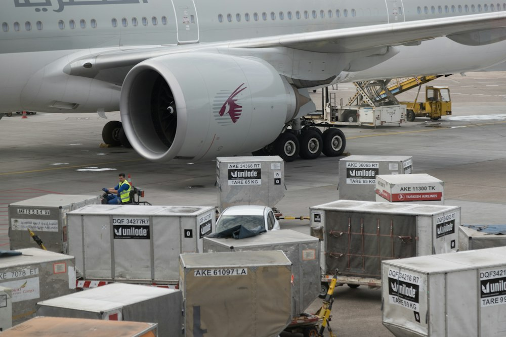

IMPORT-EXPORT • TRANSIT • SOURCING • TRADING
ZAS TRANSIT & TRADE
Votre partenaire pour le commerce international.
De la recherche de produits à l'organisation du transport, nous vous accompagnons dans vos opérations commerciales entre les marchés internationaux et l'Afrique.
Contacter sur WhatsAppÀ VOS CÔTÉS, DE BOUT EN BOUT
Le commerce international, plus accessible.
ZAS TRANSIT & TRADE accompagne les entreprises, les entrepreneurs et les particuliers dans leurs démarches de commerce international. Nous aidons à transformer un besoin en une opération claire, avec un suivi adapté à chaque projet.
Découvrir notre approcheà votre écoute
adaptée à votre projet
jusqu’à l’acheminement
UN RÉSEAU DE SAVOIR-FAIRE
Des échanges à chaque étape.
Ports, plateformes logistiques et fret aérien : autant de relais entre les marchés et leurs destinations.



CE QUE NOUS FAISONS
Une expertise au service de vos échanges.
Import-export
Achats, importation et acheminement de marchandises depuis différents marchés.
02 / 05Sourcing
Recherche de produits et de fournisseurs selon vos critères et votre besoin.
03 / 05Transit & logistique
Organisation et suivi des opérations de transport et d’acheminement.
04 / 05Commerce international
Accompagnement des entreprises qui développent leurs activités à l’international.
05 / 05Trading
Solutions et opportunités liées aux échanges sur les marchés internationaux.
UN PARCOURS CLAIR
Comment ça fonctionne.
Un accompagnement qui commence par l’écoute et avance à votre rythme.
- 01
Vous nous présentez votre besoin.
Votre demande, votre budget et votre destination posent le cadre.
- 02
Nous recherchons une solution adaptée.
Nous étudions les produits, fournisseurs et options possibles.
- 03
Nous accompagnons l’achat et la logistique.
Les modalités sont discutées ensemble avant d’avancer.
- 04
Nous suivons l’acheminement convenu.
Vous restez informé selon les modalités établies pour votre projet.
NOTRE FAÇON DE TRAVAILLER
La confiance se construit à chaque étape.
Des échanges directs, des informations claires et une attention constante portée à votre projet.
En savoir plus sur ZAS- 01Fiabilité
- 02Transparence
- 03Réactivité
- 04Ouverture internationale
- 05Professionnalisme
PARLONS DE VOTRE PROJET
Quel est votre prochain marché ?
Expliquez-nous ce que vous recherchez. Nous échangerons avec vous sur les prochaines étapes.